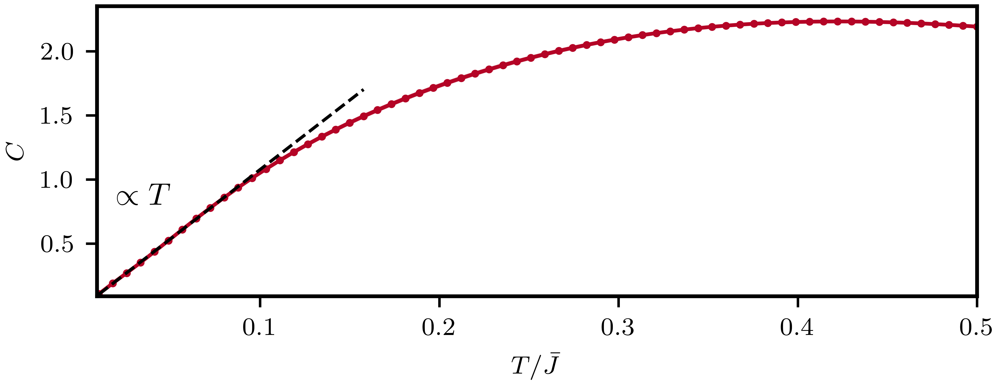

Specific Heat Random t-J Model
We use full exact diagonalisation (ED) to calculate the specific heat in the t-J model with \(N\) sites, incorporating all-to-all random interactions and hoppings, $$ \mathcal{H} = \frac{1}{\sqrt{N}}\sum_{i\neq j=0}^{N-1} t_{i j} P c^\dagger_{i\alpha} c_{j\alpha} + \frac{1}{\sqrt{N}} \sum_{i< j=0}^{N-1} J_{ij} \boldsymbol{S}_i \cdot \boldsymbol{S}_j, $$ where \(P\) is the projection on non-doubly occupied sites, \(\boldsymbol{S}_i=\frac{1}{2}c^\dagger_{i\alpha} \boldsymbol{\sigma}_{\alpha \beta}c_{j\beta}\) is the spin operator on site \(i\). Both the hoppings \(t_{ij}=t^\ast_{ji}\) and the exchange interation \(J_{ij}\) are independent random numbers with zero mean and variance \(\bar{t}^2 and\bar{J}^2\), respectively. This type of system exhibits a transition from a spin glass to a disordered Fermi liquid with increasing doping [1]. Notably, at the critical value of the doping, \(p_c \sim1/3\), the model displays features reminiscent of the criticality observed in SYK models.
The following algorithm constructs the t-J Hamiltonian and computes the specific heat using full ED for each realization of the random couplings. The specific heat is then obtained by performing disorder averaging in the post-processing step. In the figure above, we illustrate the case where \(\bar{t}^2 = \bar{J}^2\), \(N=8\), and the number of fermions with spin-up and spin-down is \(2\).

#include <iostream>
#include <vector>
#include <string>
#include <random>
#include <xdiag/all.hpp>
const unsigned Nsites = 8; // total number of sites
const unsigned Nup = 2; // total number of spin-up fermions
const unsigned Ndn = 2; // total number of spin-down fermions
const unsigned Nsamples = 200; // number of disorder averages
const double thopp = 1.0; // Variances hopping elements
const double Jhopp = 1.0; // Variances exchange elements
// Create random devices to generate random couplings
std::random_device rd;
std::vector<unsigned int> seeds = {rd(), rd(), rd(), rd(), rd()};
std::seed_seq seq(seeds.begin(), seeds.end());
std::mt19937 gen(seq);
using namespace xdiag;
void get_H(xdiag::OpSum &H);
int main()
try
{
// define Hamiltonian
auto block = tJ(Nsites, Nup, Ndn); // tj model sites
// Temperature range to compute the specific heat
arma::vec Temp = arma::linspace<arma::vec>(0.01, 0.5, 64);
// array to store specific heat
arma::mat C = arma::mat(Temp.n_elem, Nsamples, arma::fill::zeros);
// Obtain different disorder realizations
arma::vec eigs;
arma::cx_mat vecs;
// Generate bond interactions. Save all possible elements in a vector of strings to modifie latter
auto H = OpSum();
for (unsigned i = 0; i < Nsites; i++)
{
for (unsigned j = (i + 1); j < Nsites; j++)
{
std::string Sij = "S_" + std::to_string(i) + "_" + std::to_string(j);
std::string tij = "t_" + std::to_string(i) + "_" + std::to_string(j);
H += Sij * Op("SdotS", {i, j});
H += tij * Op("Hop", {i, j});
}
}
for (unsigned i = 0; i < Nsamples; i++)
{
get_H(H); // generate new random couplings for the tj Hamiltonian
arma::cx_mat Hmat = matrixC(H, block); // convert to matrix
arma::eig_sym(eigs, vecs, Hmat); // perform exact diagonalization
for (unsigned j = 0; j < Temp.n_elem; j++)
{
arma::vec exp_eval = arma::exp(-eigs / Temp(j));
double Z = arma::sum(exp_eval); // Partition function;
double energy = arma::sum(eigs % exp_eval) / Z;
C(j, i) = (1.0 / pow(Temp(j), 2)) * (arma::sum(eigs % (eigs % exp_eval)) / Z - pow(energy, 2)); // Specific Heat
}
}
std::string filename = "randomtj.Nsites." + std::to_string((unsigned)Nsites) + ".outfile.h5";
auto save_fl = FileH5(filename, "w!");
save_fl["Temperature"] = Temp;
save_fl["Specific_Heat"] = C;
return 0;
}
catch (Error e)
{
error_trace(e);
}
void get_H(xdiag::OpSum &H)
{
// Normal random generators
std::normal_distribution<double> Jdist(0.0, pow(Jhopp, 2));
std::normal_distribution<double> tdist(0.0, pow(thopp, 2)/ sqrt(2.0));
// update random couplings
for (unsigned i = 0; i < Nsites; i++)
{
for (unsigned j = (i + 1); j < Nsites; j++)
{
std::string Sij = "S_" + std::to_string(i) + "_" + std::to_string(j);
std::string tij = "t_" + std::to_string(i) + "_" + std::to_string(j);
H[Sij] = Jdist(gen) / sqrt(Nsites);
H[tij] = std::complex<double>(tdist(gen), tdist(gen)) / sqrt(Nsites);
}
}
}
using XDiag
using Random, Distributions
using LinearAlgebra
using Printf
using HDF5
function get_H!(H::OpSum, Nsites::Int, thopp::Float64, Jhopp::Float64)
#Variance of the hopping and interaction parameter:
thopp = 1.0
Jhopp = 1.0
Jdist = Normal(0.0, Jhopp^2) # Normal distribution
tdist = Normal(0.0, thopp^2 / sqrt(2.0)) # thopp
for i in 1:Nsites
for j in (i+1):Nsites
H["J_{$i}_{$j}"] = rand(Jdist) / sqrt(Nsites)
H["t_{$i}_{$j}"] = (rand(tdist) + 1im * rand(tdist)) / sqrt(Nsites)
end
end
end
function main()
Random.seed!(123) # seed this
Nsamples = 200
# define Hamiltonian
Nsites = 8 # total number of sites
nup = 2 # total number of spin-up fermions
ndn = 2 # total number of spin-down fermions
block = tJ(Nsites, nup, ndn) # tj model sites
Temp = LinRange(0.01, 0.5, 64) # temperature array
C = zeros(Float64, (length(Temp), Nsamples)) # array to store specific heat
#build Hamiltonian
H = OpSum()
for i in 1:Nsites
for j in (i+1):Nsites
H += "J_{$i}_{$j}" * Op("SdotS", [i, j])
H += "t_{$i}_{$j}" * Op("Hop", [i, j])
end
end
for i in 1:Nsamples
get_H!(H, Nsites, 1.0, 1.0) #generate random Hamiltonian
Hmat = matrix(H, block)
evals = eigvals(Hermitian(Hmat))
for (j, t) in enumerate(Temp)
exp_eval = exp.(-evals ./ t)
Z = sum(exp_eval) # Partition function
energy = sum(evals .* exp_eval) / Z
C[j, i] = (1.0 / t^2) * (sum(evals .* evals .* exp_eval) / Z - energy^2)
end
end
filename = @sprintf("randomtj.Nsites.%d.outfile.h5", Nsites)
h5open(filename, "w") do file
write(file, "Temperature", collect(Temp))
write(file, "Specific_Heat", C)
end
end
main()
references
[1] H. Shackleton, A. Wietek, A. Georges, S. Sachdev, Quantum Phase Transition at Nonzero Doping in a Random t-J Model. Phys. Rev. Lett. 126, 136602 (2021)